CVPR
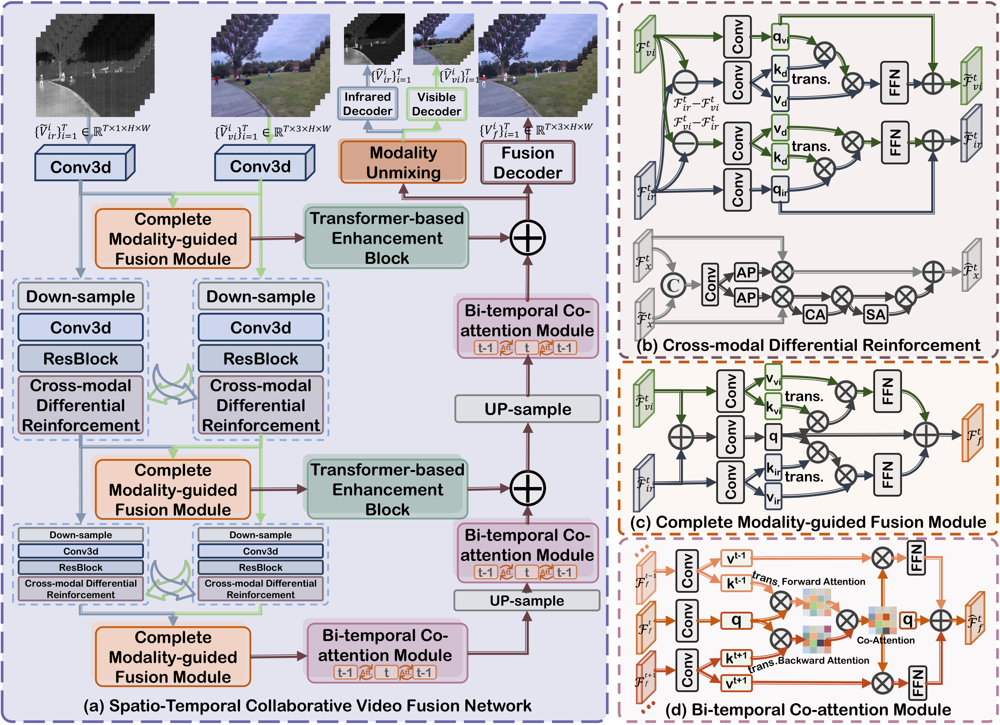
VideoFusion: A Spatio-Temporal Collaborative Network for Multi-modal Video Fusion and Restoration
In Proceedings of the IEEE/CVF Conference on Computer Vision and Pattern Recognition (CVPR), 2026
引用 10
按时间倒序整理的论文列表。

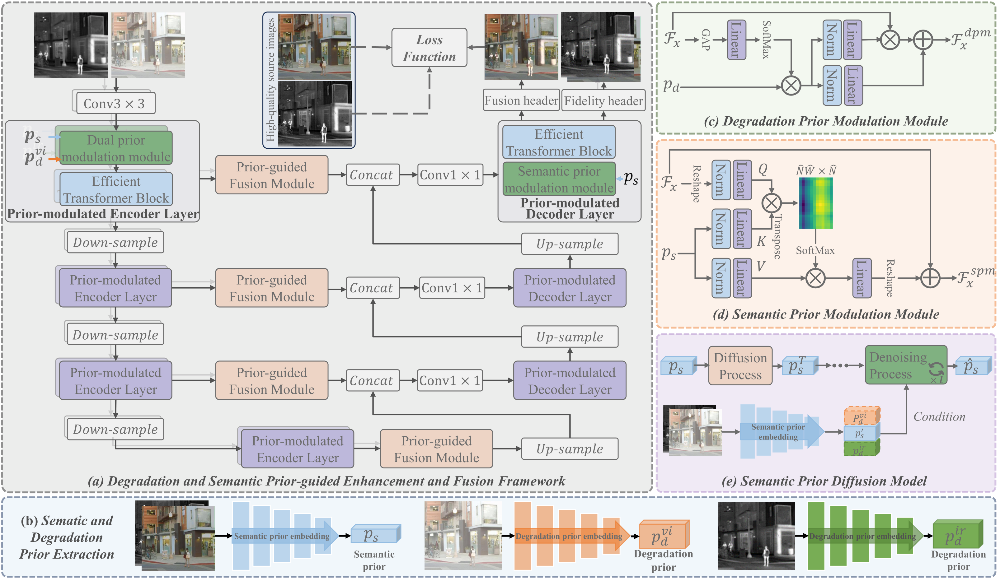
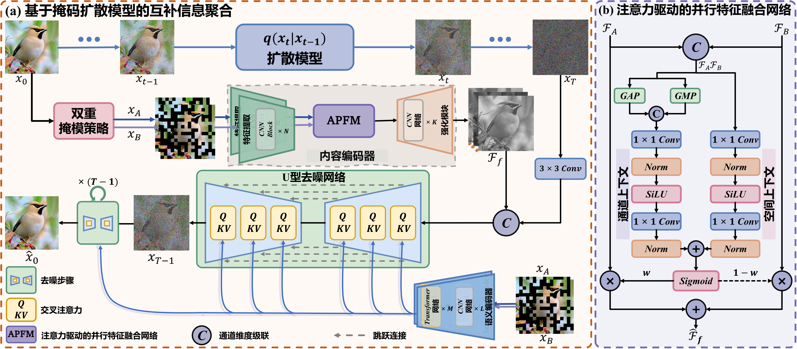
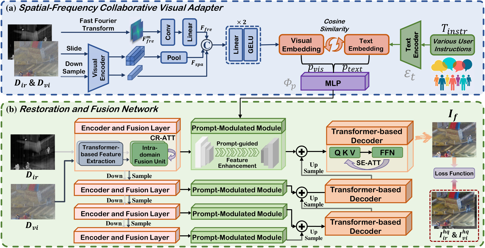
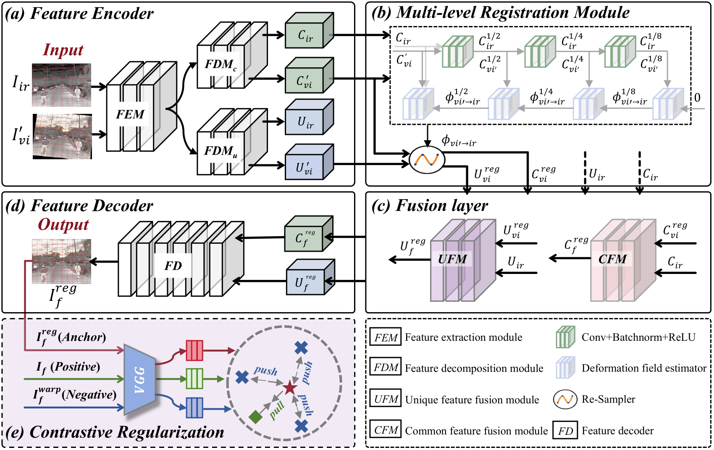
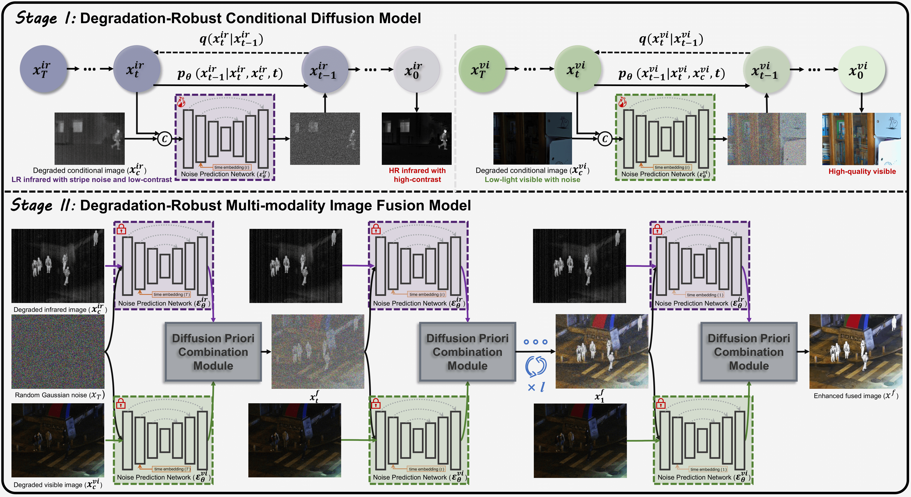
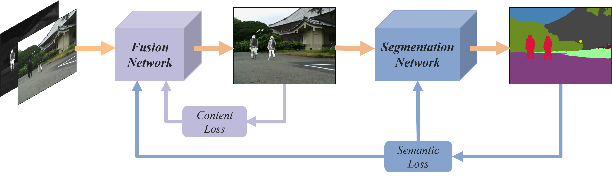
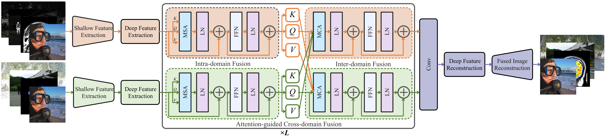
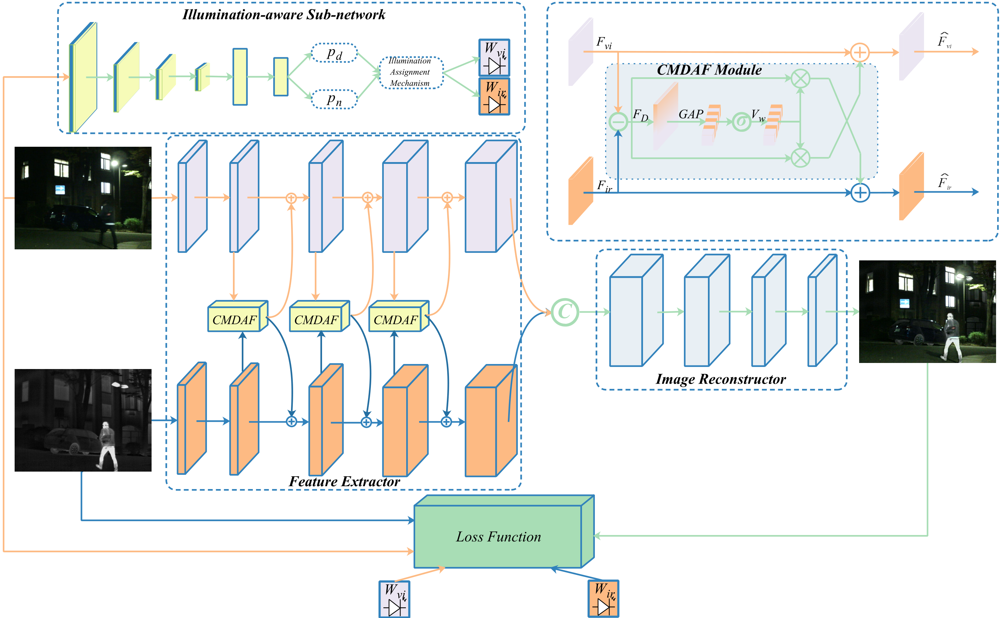
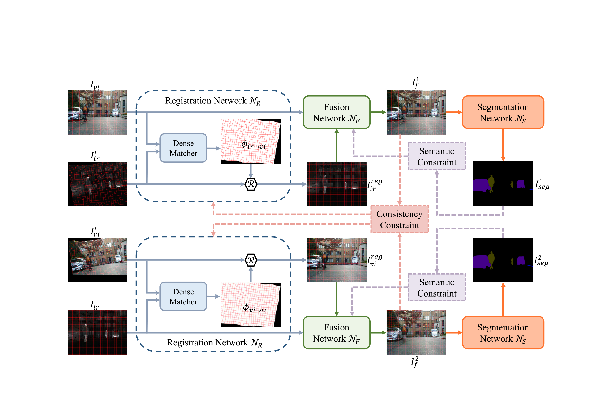
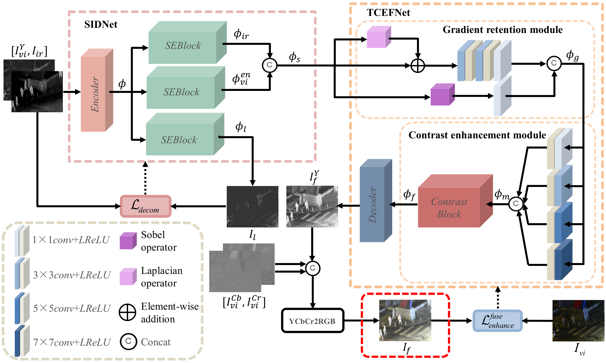
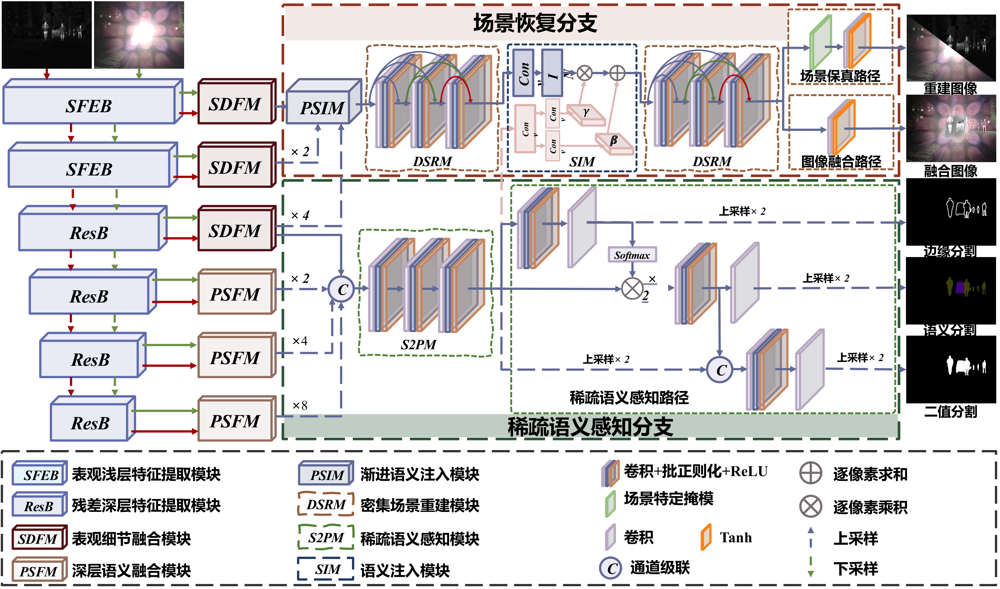
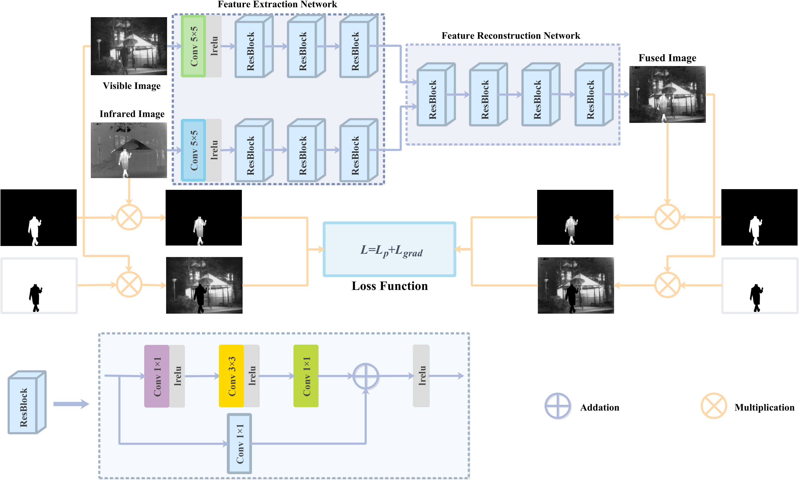
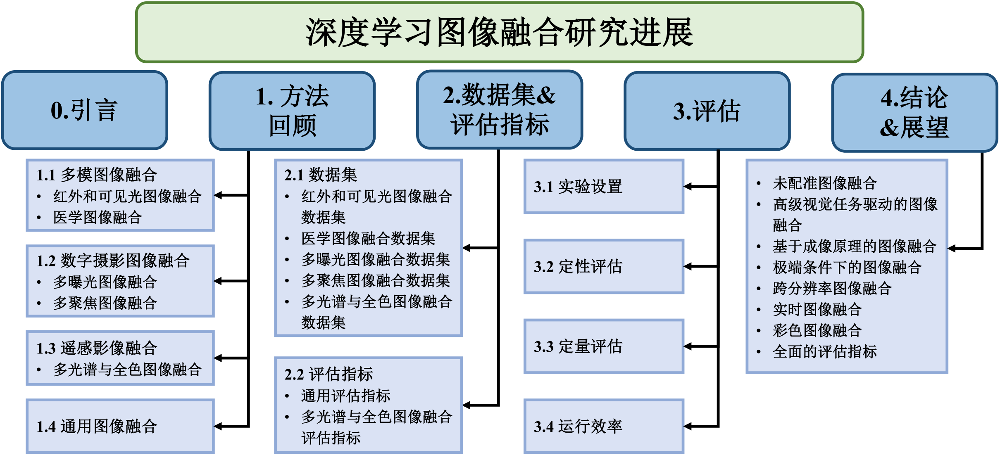
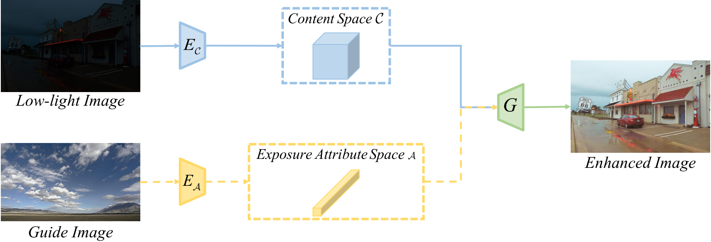
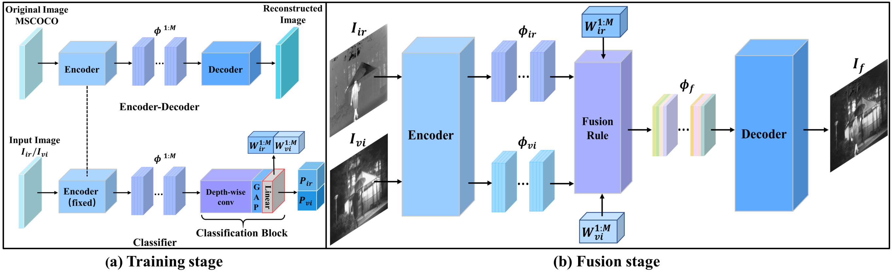
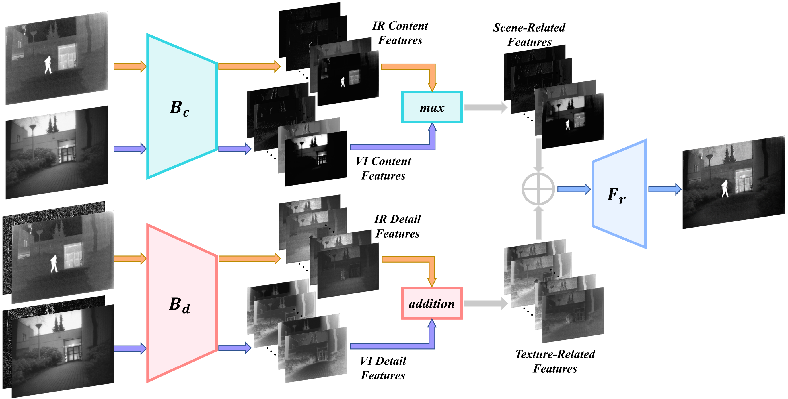